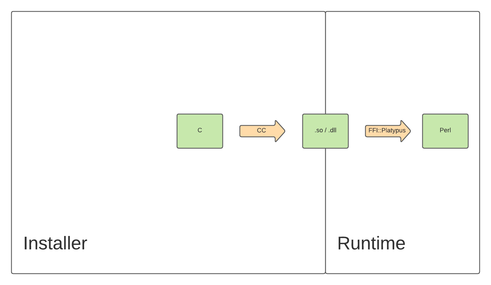

name: initial-layout layout: true <div class="nx-header-flag-1"></div> <div class="nx-header-flag-2"></div> <div class="nx-footer"> <small> <a href="https://alienfile.org/ffi-stat">alienfile.org/ffi-stat</a> </small> / <a href="https://twitter.com/plicease">@plicease</a> / <a href="https://sched.co/ylEf">The Perl Conference</a> / 22 June 2022 </div> --- name: title class: center, middle # Bundling Code With *FFI::Platypus* ## How **FFI::C::Stat** was born --- template: initial-layout layout: true <div class="nx-header-title">🌻 Bundling Code With Platypus</div> --- # It all began * Archive::Libarchive::FFI * Comprehensive Perl bindings for libarchive * Using FFI::Raw --- # Cheating ```C const struct stat* archive_entry_stat(struct archive_entry *); ``` -- count: false ``` sub archive_entry_stat { my($entry) = @_; no strict 'refs'; map { &{"archive_entry_$_"}($entry) } qw ( dev ino mode nlink uid gid rdev atime mtime ctime ); } ``` --- # Why? ```C struct stat { dev_t st_dev; /* ID of device containing file */ ino_t st_ino; /* Inode number */ mode_t st_mode; /* File type and mode */ nlink_t st_nlink; /* Number of hard links */ uid_t st_uid; /* User ID of owner */ gid_t st_gid; /* Group ID of owner */ dev_t st_rdev; /* Device ID (if special file) */ off_t st_size; /* Total size, in bytes */ blksize_t st_blksize; /* Block size for filesystem I/O */ blkcnt_t st_blocks; /* Number of 512B blocks allocated */ /* Since Linux 2.6, the kernel supports nanosecond precision for the following timestamp fields. For the details before Linux 2.6, see NOTES. */ struct timespec st_atim; /* Time of last access */ struct timespec st_mtim; /* Time of last modification */ struct timespec st_ctim; /* Time of last status change */ #define st_atime st_atim.tv_sec /* Backward compatibility */ #define st_mtime st_mtim.tv_sec #define st_ctime st_ctim.tv_sec }; ``` --- # FFI::Platypus + Bundled code install/runtime  --- # FFI::C::Stat implementation ```C dev_t stat__dev(struct stat *self) { return self->st_dev; } dev_t stat__rdev(struct stat *self) { return self->st_rdev; } ``` -- count: false ``` $ffi->attach( dev => ['stat'] => 'dev_t' ); $ffi->attach( rdev => ['stat'] => 'dev_t' ); ``` -- count: false ``` $ffi->attach( stat => ['archive_entry'] => opaque => sub { my($xsub, $self) = @_; my $ptr = $xsub->($self); defined $ptr ? FFI::C::Stat->clone($ptr) : undef; }); ``` --- # Why? * now properly complete libarchive bindings -- count: false * useful for APIs that return `stat` structures -- count: false * bundling code can solve some corner cases --- # Bug! * [https://github.com/PerlFFI/FFI-C-Stat/issues/5] --- name: questions class: nx-hide-bullet # Questions * <img src="img/www.svg" class="nx-icon"> <a href="https://alienfile.org/ffi-stat">alienfile.org/ffi-stat</a> * <img src="img/irc.svg" class="nx-icon"> [\#native](https://kiwiirc.com/nextclient/#irc://irc.perl.org/#native?nick=mc-guest-?) on [irc.perl.org](http://irc.perl.org) * <img src="img/github.svg" class="nx-icon"> [github.com/PerlAlien](https://github.com/PerlAlien) * <img src="img/github.svg" class="nx-icon"> [github.com/PerlFFI](https://github.com/PerlFFI) * [@plicease](https://twitter.com/plicease)